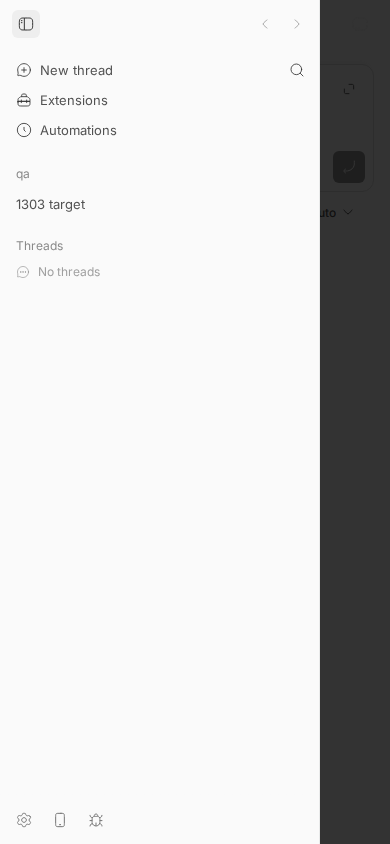
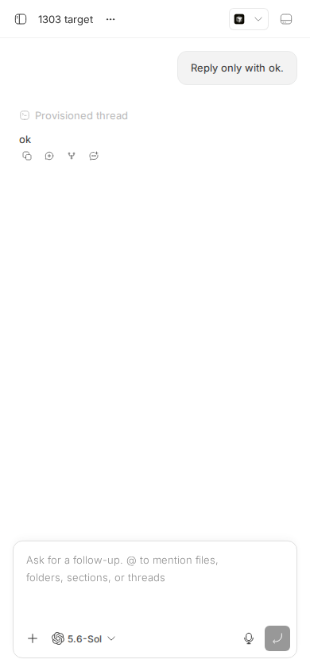
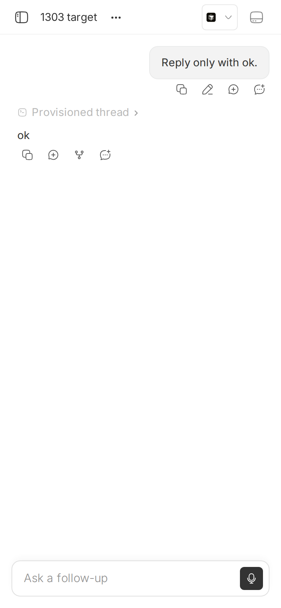

#1303 · Opening a thread fires ~19 API requests, including per-open environment git probes
TL;DR
Plain-language framing. The bb web app is a single-page app: when you tap a thread in the sidebar it does not reload the page, it mounts the thread screen (ThreadDetailView) and every React hook on that screen that needs server data fires its own GET /api/v1/… request. Two of those hooks ask the server for the workspace git status and the GitHub pull request of the thread's environment. The server forwards both to the host daemon, which runs git status/git diff/… and gh pr view on the worktree, every single time, with no cache anywhere.
What I measured on main (16ceb3a54), mobile viewport 390×844, tapping a thread in the sidebar: 12–15 distinct /api/v1/ URLs (20–21 requests fired, half of them immediately aborted by React StrictMode in dev), in three dependent tiers: (1) ten thread-scoped reads fired at once, (2) environments/:id/status and environments/:id/pull-request once the thread's environmentId is known, (3) a second status refetch a few hundred ms later. With 300 ms of emulated RTT the first timeline text appears at +876 ms instead of +271 ms and the view settles at +1.7 s. The status probe costs 70–260 ms of git work per open; the pull-request probe costs 1.1–1.6 s of GitHub API network per open on any repo with a GitHub remote (60 ms only when there is no remote, because gh fails immediately). The status query is configured with staleTime: 0 + refetchOnMount: "always" and the PR query with refetchOnMount: true + refetchOnWindowFocus: "always", so both re-probe on every open and the PR one additionally on every tab/app foreground.
The issue's core claims hold. Its framing that the waterfall "serializes into seconds" is only partly right: the ten thread reads are issued in parallel (they queue behind the browser's 6-connections-per-origin limit on HTTP/1.1, so at 300 ms RTT they complete in two ~300 ms batches), the real serialization is the thread → environment → status/PR dependency plus the uncached git/gh work behind those two endpoints.
Claims vs findings
| Claim | Status | Evidence |
|---|---|---|
| Opening one thread at mobile width issues ~19 requests (StrictMode duplicates excluded) | Verified (order of magnitude) | Sidebar tap: 12 distinct URLs / 20 fired (count-requests.out, waterfall-0ms.out). Cold page load of a thread URL: 15 distinct thread-scoped URLs plus shell requests (cold-load-requests.out). Exact count depends on which panels/tabs the thread has; the closed PR #1481 measured 14 distinct resources / 20 requests on the seed DB. |
| Requests include thread, timeline, tabs, interactions, queued-messages, prompt-history, default-execution-options, thread-storage listing, fork + parent child-thread lists, environment status, environment pull-request | Verified | All twelve appear verbatim in the request lists below, plus system/execution-options (another host RPC, 230–410 ms) and plugins/contributions. |
| Each response is small and fast locally (mostly <60 ms) | Verified | DB-backed reads: 4–26 ms each. Exceptions: system/execution-options 232–409 ms, environments/:id/status 72–256 ms, environments/:id/pull-request 60 ms (no remote) / 1.1–1.6 s (GitHub remote). |
| On mobile RTTs of 100–300 ms the waterfall serializes into seconds | Partially verified | With 300 ms emulated RTT: first timeline text +876 ms (vs +271 ms), settle +1.74 s. Most thread reads are parallel (bounded by 6 HTTP/1.1 connections); the dependent tiers are thread → env status/PR → status refetch. Seconds are reached mainly through the uncached gh lookup and higher RTTs (the reporter's 529 ms TTFB comment). |
environments/:id/status and environments/:id/pull-request each took ~200 ms on a warm local daemon | Verified / understated | status: 197–256 ms first probe, 48–72 ms warm (time-env-endpoints.out). pull-request: 1.1–1.6 s with a GitHub remote (…-with-remote.out). |
| They run git (and PR lookup) work on every thread open, including idle threads whose worktree hasn't changed | Verified | No cache in the daemon (Workspace.getStatus spawns 4–5 git processes; getPullRequest spawns git + gh pr view), and the app query policies force a refetch on every mount (Root cause). |
| Comment: reproduces on a small (~4k DOM nodes) instance; taps cost 3–15 s over a Cloudflare tunnel with 529 ms TTFB | Unverifiable here | Consistent with the mechanism: 3 dependent tiers × 529 ms + a 1–1.5 s gh round trip ≈ 3 s before the view settles. Not measured on a real device. |
Environment
- bb
16ceb3a54(main, 2026-08-18), worktree/home/USER/projects/bb/.claude/worktrees/wf_242c3e11-a10-23; dev instance app:12873, server:20873, daemon:28873, data dir/home/USER/.bb-dev/projects-bb-.claude-worktrees-wf_242c3e11-a10-23-669a8211a96b(dev mode: Vite dev server, React StrictMode on, HTTP/1.1 same-origin proxy to the server). - Linux 7.0.0-29-generic, node v24.18.0, codex-cli 0.147.0 (provider
codex, one turn "Reply only with ok."),ghauthenticated. - Project
proj_4r7awx3ed2→ local path/tmp/1303-qa(1-commit git repo; agithub.com/get-bb/bbremote was added for the pull-request timing). Threadthr_thnzrmgehr, environmentenv_iaxcfu77hf. - Browser: Playwright 1.58.2 (bundled with the global
dev-browserCLI) driving headless Chromium 1208, viewport 390×844,isMobile, DPR 2. Network emulation via CDPNetwork.emulateNetworkConditions.
Minimal reproduction
- Build and start a dev instance:
pnpm install --frozen-lockfile --prefer-offline && pnpm exec turbo run build && scripts/bb-dev-app current. Note the App and Server URLs. - Create a scratch repo and a project, then spawn one thread so it gets an environment (host id from
curl $BB_SERVER_URL/api/v1/hosts):mkdir -p /tmp/1303-qa && echo hi > /tmp/1303-qa/README.md && git -C /tmp/1303-qa init -q -b main && git -C /tmp/1303-qa add . && git -C /tmp/1303-qa -c user.email=a@b -c user.name=qa commit -qm init git -C /tmp/1303-qa remote add origin https://github.com/get-bb/bb.git # any GitHub remote; makes `gh pr view` do a real API call curl -s -X POST $BB_SERVER_URL/api/v1/projects -H 'content-type: application/json' \ -d '{"name":"qa","source":{"type":"local_path","path":"/tmp/1303-qa","hostId":"host_pjs6fmc5mh"}}' # -> proj_4r7awx3ed2 node packages/scripts/dist/commands/run-cli.js thread spawn --project proj_4r7awx3ed2 --machine host_pjs6fmc5mh \ --provider codex --permission-mode accept-edits --title "1303 target" --prompt "Reply only with ok." --json # -> thr_thnzrmgehr curl -s $BB_SERVER_URL/api/v1/threads/thr_thnzrmgehr | jq '{status, environmentId}' # idle, env_iaxcfu77hf - Time the two environment probes directly (
1303/repro/1303-time-env-endpoints.sh):$ BB_SERVER_URL=http://localhost:20873 1303/repro/1303-time-env-endpoints.sh env_iaxcfu77hf 3 # with the GitHub remote status 0.049825s http=200 pull-request 1.180093s http=200 thread-like 0.001020s http=200 (GET /environments/:id, DB only, for comparison) status 0.049921s http=200 pull-request 1.441495s http=200 thread-like 0.001025s http=200 (GET /environments/:id, DB only, for comparison) status 0.048440s http=200 pull-request 1.102594s http=200 thread-like 0.000929s http=200 (GET /environments/:id, DB only, for comparison) --- status body: {"outcome":"available","workspace":{"workingTree":{"insertions":0,"deletions":0,"lineStatsComplete":true,"files":[],"hasUncommittedChanges":false,"state":"clean"},"checkout":{"kind":"branch","branchName":"main","headSha":"806582ec55704c8eff902c79ce4b0f3b7a6a8ae3"},"branch":{"currentBranch":"main","defaultBranch":"main"},"mergeBase":null}} --- pull-request body: {"outcome":"absent"}Same repo before the remote was added (out):pull-request 0.063s, body{"outcome":"unavailable","message":"gh pr view failed: no git remotes found"}. Expected: a read of an idle, unchanged worktree should be cheap and cacheable. Actual: every call spawns git andgh; with a GitHub remote each call is a 1.1–1.4 s GitHub API round trip. - Count the requests a sidebar tap fires at mobile width (
1303/repro/1303-waterfall.mjs; the sandboxeddev-browservariant1303-count-requests.js/1303-run-count.shgives the same list without throttling). Output (waterfall-0ms.out):$ APP=http://localhost:12873 PROJECT=proj_4r7awx3ed2 THREAD=thr_thnzrmgehr THREAD_TITLE="1303 target" LATENCY_MS=0 node 1303/repro/1303-waterfall.mjs emulation: none; viewport 390x844 mobile === thread open: 21 /api/v1/ requests fired (12 distinct URLs; 13 completed, rest aborted by dev StrictMode) === first timeline text visible at +271ms; last response at +1464ms start latency status + 149ms 6ms aborted GET /api/v1/threads/thr_thnzrmgehr/default-execution-options + 149ms 6ms aborted GET /api/v1/threads/thr_thnzrmgehr/queued-messages + 149ms 6ms aborted GET /api/v1/threads/thr_thnzrmgehr/prompt-history? + 149ms 6ms aborted GET /api/v1/system/execution-options?environmentId=env_iaxcfu77hf&providerId=codex + 150ms 5ms aborted GET /api/v1/threads?projectId=proj_4r7awx3ed2&sourceThreadId=thr_thnzrmgehr&originKind=fork&archived=false + 150ms 4ms aborted GET /api/v1/threads/thr_thnzrmgehr/tabs + 150ms 4ms 200 GET /api/v1/threads/thr_thnzrmgehr?include=environment%2Chost + 150ms 4ms 200 GET /api/v1/threads/thr_thnzrmgehr/interactions + 150ms 4ms aborted GET /api/v1/threads/thr_thnzrmgehr/thread-storage/files?limit=1000 + 150ms 5ms aborted GET /api/v1/threads/thr_thnzrmgehr/timeline? + 150ms 7ms 200 GET /api/v1/threads/thr_thnzrmgehr/default-execution-options + 150ms 7ms 200 GET /api/v1/threads/thr_thnzrmgehr/queued-messages + 150ms 7ms 200 GET /api/v1/threads/thr_thnzrmgehr/prompt-history? + 150ms 232ms 200 GET /api/v1/system/execution-options?environmentId=env_iaxcfu77hf&providerId=codex + 150ms 7ms 200 GET /api/v1/threads?projectId=proj_4r7awx3ed2&sourceThreadId=thr_thnzrmgehr&originKind=fork&archived=false + 150ms 7ms 200 GET /api/v1/threads/thr_thnzrmgehr/tabs + 150ms 7ms 200 GET /api/v1/threads/thr_thnzrmgehr/thread-storage/files?limit=1000 + 150ms 7ms 200 GET /api/v1/threads/thr_thnzrmgehr/timeline? + 228ms 197ms 200 GET /api/v1/environments/env_iaxcfu77hf/status?mergeBaseBranch=main + 229ms 1235ms 200 GET /api/v1/environments/env_iaxcfu77hf/pull-request + 695ms 72ms 200 GET /api/v1/environments/env_iaxcfu77hf/status?mergeBaseBranch=main
Expected: a thread open needs a handful of DB reads. Actual: 12 distinct URLs; the environmentstatusprobe runs twice per open and thepull-requestprobe holds the "settled" point at +1.46 s. Cold page load of the thread URL addsthreads?parentThreadId=…andtimeline?afterSequence=…(15 distinct thread-scoped URLs;cold-load-requests.out). - Same tap with 300 ms RTT / 1.6 Mbps emulated (
waterfall-300ms.out):$ … LATENCY_MS=300 node 1303/repro/1303-waterfall.mjs emulation: latency=300ms down=1.6Mbps up=750kbps; viewport 390x844 mobile === thread open: 21 /api/v1/ requests fired (12 distinct URLs; 13 completed, rest aborted by dev StrictMode) === first timeline text visible at +876ms; last response at +1740ms start latency status + 156ms 312ms 200 GET /api/v1/threads/thr_thnzrmgehr?include=environment%2Chost + 156ms 336ms 200 GET /api/v1/threads/thr_thnzrmgehr/interactions + 156ms 619ms 200 GET /api/v1/threads/thr_thnzrmgehr/default-execution-options <- 2nd batch: waited for a free connection + 156ms 627ms 200 GET /api/v1/threads/thr_thnzrmgehr/queued-messages + 157ms 633ms 200 GET /api/v1/threads/thr_thnzrmgehr/prompt-history? + 157ms 725ms 200 GET /api/v1/system/execution-options?environmentId=env_iaxcfu77hf&providerId=codex + 157ms 386ms 200 GET /api/v1/threads?projectId=proj_4r7awx3ed2&sourceThreadId=thr_thnzrmgehr&originKind=fork&archived=false + 157ms 335ms 200 GET /api/v1/threads/thr_thnzrmgehr/tabs + 157ms 386ms 200 GET /api/v1/threads/thr_thnzrmgehr/thread-storage/files?limit=1000 + 157ms 335ms 200 GET /api/v1/threads/thr_thnzrmgehr/timeline? + 482ms 327ms 200 GET /api/v1/environments/env_iaxcfu77hf/status?mergeBaseBranch=main <- tier 2: needs environmentId + 483ms 1257ms 200 GET /api/v1/environments/env_iaxcfu77hf/pull-request + 993ms 304ms 200 GET /api/v1/environments/env_iaxcfu77hf/status?mergeBaseBranch=main <- tier 3: refetch
(aborted StrictMode duplicates elided.) Time to first timeline text triples (271 → 876 ms) and settle is dominated by the tiered probes.



Root cause
1. Every data need on the thread screen is its own query, and none of it is deferred. ThreadDetailView mounts, in the same render, hooks for the thread (+environment/host), timeline, interactions, queued messages, prompt history, default execution options, system execution options, tabs, thread-storage listing (limit=1000), fork children (originKind=fork), parent children (parentThreadId), environment work status and environment pull request. The child-thread subset query, for example, is enabled as soon as the thread is loaded regardless of whether the child section is visible (ThreadDetailView.tsx#L801-L811); the storage listing feeds a secondary panel that is closed on mobile (#L645-L682). Nothing distinguishes "needed for first paint" from "needed when a panel opens".
2. The two environment probes are configured to refetch on every mount, and the server/daemon do no caching. App side (environment-queries.ts#L103-L140, #L179-L206, query-policies.ts#L60-L63):
// useEnvironmentWorkStatus
...REALTIME_OWNED_MOUNT_BASELINE_QUERY_POLICY, // = { refetchOnMount: "always", refetchOnWindowFocus: false }
staleTime: 0,
// useEnvironmentPullRequest
refetchOnMount: true,
refetchOnWindowFocus: "always",
staleTime: (query) => getEnvironmentPullRequestStaleTime(...) // 30 s while open/absent, 1 h when merged/closed
Both hooks are called unconditionally by ThreadDetailView as soon as environment.isGitRepo is known (ThreadDetailView.tsx#L1732-L1753). Server side, GET /environments/:id/status and /pull-request are thin pass-throughs to host RPCs workspace.status and workspace.pull_request (routes/environments.ts#L322-L380, workspace-status.ts#L25-L55). Daemon side, Workspace.getStatus spawns git status, a numstat, checkout-ref, default-branch and (optionally) merge-base reads on every call (workspace.ts#L717-L771), and getPullRequest runs git + gh pr view --json …, i.e. a GitHub API round trip (workspace.ts#L680-L696, git-host.ts#L626-L660). No layer memoizes the result, even though the daemon already runs a fingerprint watcher that knows when a workspace's status or refs changed (watch-manager.ts#L365-L415 emits work-status-changed / git-refs-changed).
Why the symptom follows. On each thread open the app fires ~10 parallel reads (tier 1), then, once the thread payload delivers environmentId, the two probes (tier 2, each a server→daemon→child-process chain; the PR one goes to github.com), then a status refetch (tier 3, observed at +695 ms unthrottled and +993 ms throttled — the realtime-subscription baseline / merge-base re-key). Each tier costs at least one RTT and tier 2 costs the git/gh time on top. On a phone with 300–500 ms RTT this is 1.5–3 s before the view settles, on a thread whose worktree has not changed. The refetchOnWindowFocus: "always" on the PR query means backgrounding and foregrounding the phone re-runs the 1–1.5 s gh lookup as well.
Deeper issue. Two previous fixes (#1470: daemon-side 5 s status cache + defer storage listing; #1481: coalesce mount-time reads, defer tabs/fork/storage) were closed unmerged on 2026-08-13 "to step back and inventory the thread-open request graph". Nothing landed since; git log 16ceb3a54..origin/main touches none of these files. The team explicitly rejected re-creating an aggregate bootstrap (the old composer-bootstrap was removed in #335 because it became a readiness gate), so the issue's first suggestion is contested.
Proposed fix (first principles)
- Cache workspace status in the daemon, invalidated by the existing watcher. In
WatchManager/command-dispatch.tskeep a per-environment{ key(mergeBaseBranch, budgets) → WorkspaceStatus }memo, cleared when the watcher emitswork-status-changed/git-refs-changedfor that environment and after daemon-owned mutations (commit, checkout, pull, PR actions), plus a short TTL (5 s) as a safety net; coalesce concurrent identical calls. Daemon-internal, no wire change, noHOST_DAEMON_PROTOCOL_VERSIONbump. Risk: staleness right after an externalgitcommand in a terminal — bounded by the watcher latency + TTL. #1470's branch already had this and can be mined. - Stop probing GitHub on every open. Change
useEnvironmentPullRequesttorefetchOnMount: falseand droprefetchOnWindowFocus: "always"(the query is realtime-owned viauseEnvironmentDetailRealtimeSubscription; the 30 s/1 h staleTime already exists), and have the server refresh PR state ongit-refs-changedrather than content-only events. Also add a daemon-side memo of the lastgh pr viewresult per branch (TTL 30–60 s, invalidated on refs change) so a fresh mount from another device is still cheap. App-only + daemon-only changes; no protocol bump. What could go wrong: a PR opened from a terminal outside bb shows up to one refresh cycle late. - Defer surfaces that are not visible. Gate
useEnvironmentWorkStatus/useEnvironmentPullRequest, the storage listing, tabs, and the fork/parent child-thread lists on the surface that renders them being open (secondary panel, thread details drawer, header pill on desktop only). On mobile none of these are visible on first paint (screenshot above). This is what #1481 did for tabs/fork/storage. - Optional: make
useEnvironmentWorkStatususerefetchOnMount: true+ a small staleTime instead of"always"/0, and find why it fires twice per open (the +695 ms refetch); the second probe is pure waste.
Any of 1–3 alone removes most of the per-open git/gh cost; together they cut the open graph from 12–15 to roughly 6 requests (thread, timeline, interactions, queued messages, default execution options, prompt history) with no cross-package contract change. I would not add an aggregate bootstrap endpoint given #335/#1470's history.
PR review
No open PRs are linked to this issue. Two closed, unmerged attempts exist for context: #1470 "Reduce the thread-open request waterfall" and #1481 "Reduce thread-open request fanout" (both closed 2026-08-13 by the author while re-inventorying the request graph). Neither was reviewed here.
Related issues
- #1302: sidebar-bootstrap ships 138 KB and refetches wholesale on thread status changes (the "sidebar open takes seconds" half of the comment).
- #1301: thread timeline never unmounts history (22k DOM nodes).
- #1304: composer keystroke cost scales with mounted timeline size.
- #1616: iOS Safari performance audit (20 findings).
- #1300:
pnpm seed:perf(the fixture the issue was found with). - #1470, #1481: closed fix attempts.
Appendix
Commands run
git checkout 16ceb3a54
pnpm install --frozen-lockfile --prefer-offline
pnpm exec turbo run build
scripts/bb-dev-app current # app :12873, server :20873, daemon :28873
mkdir -p /tmp/1303-qa; echo hi > /tmp/1303-qa/README.md; git -C /tmp/1303-qa init -q -b main; git -C /tmp/1303-qa add README.md
git -C /tmp/1303-qa -c user.email=a@b -c user.name=qa commit -qm init
curl -s http://localhost:20873/api/v1/hosts # host_pjs6fmc5mh
curl -s -X POST http://localhost:20873/api/v1/projects -H 'content-type: application/json' \
-d '{"name":"qa","source":{"type":"local_path","path":"/tmp/1303-qa","hostId":"host_pjs6fmc5mh"}}' # proj_4r7awx3ed2
node packages/scripts/dist/commands/run-cli.js thread spawn --project proj_4r7awx3ed2 --machine host_pjs6fmc5mh \
--provider codex --permission-mode accept-edits --title "1303 target" --prompt "Reply only with ok." --json # thr_thnzrmgehr
BB_SERVER_URL=http://localhost:20873 1303/repro/1303-time-env-endpoints.sh env_iaxcfu77hf 3 > 1303/repro/1303-time-env-endpoints.out
git -C /tmp/1303-qa remote add origin https://github.com/get-bb/bb.git
BB_SERVER_URL=http://localhost:20873 1303/repro/1303-time-env-endpoints.sh env_iaxcfu77hf 3 > 1303/repro/1303-time-env-endpoints-with-remote.out
dev-browser --headless --timeout 60 run 1303/repro/1303-probe.js > 1303/repro/1303-cold-load-requests.out # cold page load of the thread URL
APP=http://localhost:12873 PROJECT=proj_4r7awx3ed2 THREAD=thr_thnzrmgehr THREAD_TITLE="1303 target" 1303/repro/1303-run-count.sh > 1303/repro/1303-count-requests.out
APP=… PROJECT=… THREAD=… THREAD_TITLE="1303 target" LATENCY_MS=0 node 1303/repro/1303-waterfall.mjs > 1303/repro/1303-waterfall-0ms.out
APP=… PROJECT=… THREAD=… THREAD_TITLE="1303 target" LATENCY_MS=300 SCREENSHOT=assets/1303-thread-open-throttled-300ms.png node 1303/repro/1303-waterfall.mjs > 1303/repro/1303-waterfall-300ms.out
pnpm dev:stop
Sidebar-tap run in the sandboxed dev-browser (warm second round)
From count-requests.out: round 2 (react-query caches warm from round 1, 20 s later) still fires 10 distinct URLs including environments/:id/status; only pull-request was skipped because it was inside its 30 s staleTime.
=== round 2: tap thread "1303 target" (thr_thnzrmgehr) in sidebar: 18 /api/v1/ requests (10 distinct URLs; dev StrictMode double-fires); last response at +285ms === + 152ms 21ms 200 GET /api/v1/threads/thr_thnzrmgehr/default-execution-options + 152ms 21ms 200 GET /api/v1/threads/thr_thnzrmgehr/queued-messages + 152ms 24ms 200 GET /api/v1/threads/thr_thnzrmgehr + 152ms 25ms 200 GET /api/v1/threads/thr_thnzrmgehr/interactions + 155ms 22ms 200 GET /api/v1/threads/thr_thnzrmgehr/tabs + 155ms 24ms 200 GET /api/v1/threads/thr_thnzrmgehr/thread-storage/files?limit=1000 + 155ms 22ms 200 GET /api/v1/threads?projectId=proj_4r7awx3ed2&archived=false + 155ms 22ms 200 GET /api/v1/threads/thr_thnzrmgehr/timeline?afterSequence=18 + 156ms 21ms 200 GET /api/v1/environments/env_iaxcfu77hf + 156ms 129ms 200 GET /api/v1/environments/env_iaxcfu77hf/status?mergeBaseBranch=main
Cold page load of the thread URL: distinct /api/v1/ URLs (plugin asset fetches excluded)
GET /api/v1/system/config, /system/version, /sidebar-bootstrap, /hosts, /plugins, /plugins/contributions, /hosts/:id/provider-clis/status, POST /hosts/:id/paths/exist # shell GET /api/v1/threads/thr_thnzrmgehr?include=environment%2Chost GET /api/v1/threads/thr_thnzrmgehr/timeline? GET /api/v1/threads/thr_thnzrmgehr/timeline?afterSequence=18 GET /api/v1/threads/thr_thnzrmgehr/interactions GET /api/v1/threads/thr_thnzrmgehr/default-execution-options GET /api/v1/threads/thr_thnzrmgehr/queued-messages GET /api/v1/threads/thr_thnzrmgehr/prompt-history? GET /api/v1/system/execution-options?environmentId=env_iaxcfu77hf&providerId=codex GET /api/v1/threads?projectId=proj_4r7awx3ed2&sourceThreadId=thr_thnzrmgehr&originKind=fork&archived=false GET /api/v1/threads?projectId=proj_4r7awx3ed2&parentThreadId=thr_thnzrmgehr&archived=false GET /api/v1/threads/thr_thnzrmgehr/tabs GET /api/v1/threads/thr_thnzrmgehr/thread-storage/files?limit=1000 GET /api/v1/environments/env_iaxcfu77hf/status?mergeBaseBranch=main (x3) GET /api/v1/environments/env_iaxcfu77hf/pull-request
Notes on method
- Dev mode double-fires every query (React StrictMode) and immediately aborts the first copy; counts above report distinct URLs and completed requests separately. A production build fires each once.
- The Vite dev app proxies
/apito the server over HTTP/1.1, so the browser's 6-connection limit shapes the parallel batch; behind a Cloudflare tunnel (HTTP/2) the batch is not connection-limited but the tiering and the git/ghcost are identical. - The dev-browser sandbox does not support
page.route/CDP sessions, hence the plain-node Playwright script for the throttled run.